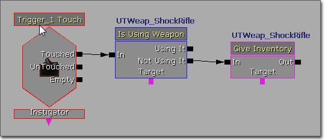

UDN
Search public documentation:
KismetExamples
日本語訳
中国翻译
한국어
Interested in the Unreal Engine?
Visit the Unreal Technology site.
Looking for jobs and company info?
Check out the Epic games site.
Questions about support via UDN?
Contact the UDN Staff
中国翻译
한국어
Interested in the Unreal Engine?
Visit the Unreal Technology site.
Looking for jobs and company info?
Check out the Epic games site.
Questions about support via UDN?
Contact the UDN Staff
Kismet Examples
Overview
Concepts
Sequences
Kismet works by executing a series of actions in response to certain events and conditions within the level. Each series or collection of related series can be thought of as a sequence. Each level, persistent or streaming, by default has a base sequence. These form a hierarchy and are, for the most part, self contained with the exception that the sequences of streaming levels can access elements in the parent persistent level's sequence. In addition to the base sequences of any level, any collection of actions, events, conditions, and variables can be placed into a new sequence or subsequence if you prefer. Again, these form a hierarchy with access being allowed up the hierarchy but never laterally. What this means is that to access a variable or something similar in another sequence, it must be located directly up the hierarchy. If two sequences both have the same parent sequence, they can only access name variables contained in the parent sequence (or its parent, etc.) and not in the other subsequence. Sequences are a great way of organizing your Kismet. New sequences you create can have any number of inputs or outputs and variable links (through the use of Sequence Activated events, Finish Sequence actions, and Proceduralism Proceduralism in the context of Kismet refers to the use of generically built sequences (in this case, this can mean either a series of actions or a complete subsequence) which use Remote Events connected to inputs and Global Variables connected to variable links and then perform some sort of action(s) on those variables or using those variables. Essentially, it is using the idea of a sequence to recreate similar functionality to a function or procedure in standard programming. In order to execute the procedural sequence, you would simply set the value(s) of the Global Variables and then use an Activate Remote Event action to trigger the associated Remote Event to activate the sequence. To illustrate the idea, imagine you want to quickly be able to set one Actor to the location and rotation of another Actor and then attach it. The normal sequence to do this might look something like this: Now, imagine you needed to do this same series of actions over and over with different Actors. Obviously, duplicating this sequence for every time it is needed could potentially get out of hand and would clutter your Kismet workspace. In comparison, the procedural version of this sequence would look similar to this: By making it procedural, the single procedural sequence can be reused each time it is needed while only needing to set the variables and activate the event. The real advantage of using this technique comes when you want to make a change to the sequence. Instead of having multiple copies of it that need to be modified that you must hunt around for, there is only one single sequence in one location to alter.Events
Events are the basis for Kismet. They are triggered in response to certain predetermined or dynamic situations and are responsible for starting the execution of sequences. The basic idea is that something happens in the game and a corresponding event is triggered in Kismet to cause a sequence of actions to be carried out in response to that event. There are several types of events that can be used to trigger sequences in Kismet. A few of the most common of these are described below.Level Events
The Level Loaded event is a very useful event for triggering sequences based on that status of the level containing the sequence. These statuses are:- Loaded and Visible - Triggered when the level has been loaded into memory and made visible. This is useful for streaming levels that have sequences that should be activated when the level becomes visible.
- Beginning of Level - Triggered when the level is first loaded. This is useful for level events that should only happen a single time when the level first begins.
- Level Reset - Triggered any time the level is reset. This is useful for events that should happen each time the level is started or restarted.
Player Interaction Events
Certain events occur based on the player interacting with Triggers or TriggerVolumes within the level.Touch Events
A Touch event is an event that is triggered by one Actor encroaching on (or "touching") another Actor. While not technically limited to a Trigger or TriggerVolume being triggered by a player, this is by far the most common use of this type of event. This type of event is used for creating sequences that are activated by player proximity.Used Events
A Used event is an event that is triggered by the player pressing the "Use" key ('E' by default) within a certain range of a specific Actor, usually a Trigger. This type of event allows for creating sequences that must be initiated by the player with intention, such as pressing buttons, flipping switches, etc.Mover Events
A Mover event is used to create lifts or moving platforms within the level that are activated by the player standing on the lift. These come with the ability to "open", "close", and stay "open" for a set amount of time before "closing". Start by selecting a StaticMesh you want to use as your platform in the Content Browser. Then, right-click in the viewport and choose Add Actor > Add InterpActor... from the content menu. Now bring up the properties of the InterpActor, expand the Collision section, and make sure that the Collision Type is set to COLLIDE_BlockAll. With the InterpActor selected, open Kismet, right-click in the Kismet workspace, and select New Event Using InterpActor... > Mover from the context menu. This will place a special Mover event that has a pre-connected Matinee that you can use to do the movement of your platform. From there, you just keyframe your movement in Matinee and the InterpActor should move and support the player. When the player touches the InterpActor, the platform should begin to move. There are many ways of doing a similar setup. You don't need to right-click in Kismet and add the InterpActor as a Mover. You could place a Matinee on your own and have it triggered by any other Kismet action you want.Conditions
Conditions are special sequence objects that allow a sequence to diverge in two or more directions based on some criteria. These conditions are similar to conditional statements in standard programming, such as If/Else statements or switch statements. This allows Kismet sequences the ability to do rudimentary decision-making and makes it much more dynamic and engaging. Simple uses of conditions include only executing a sequence if a variable has a specific value or if the player has a specific weapon.  A more advanced use of a condition might include having multiple sequences each of which can only be executed if the Actor that triggers an event is of a specific type.Loops
Another concept borrowed from standard programming is the use of loops to repeat an action a specific number of times, until a certain condition is met, or even just indefinitely. Depending on the type of loop, this can be accomplished in one of several ways. A simple indefinite loop can be accomplished by connecting the output of an action at the end of a sequence to the input of an action at the beginning of the sequence. This will cause the sequence to continually repeat, over and over.Delays
Delaying the execution of a sequence or portion of a sequence is quite common in Kismet sequences as it is often required to have certain events occur at specific times in relation to other events, whether it is the beginning of the level, the spawning of a player, or simply the execution of a specific action. Delays can be performed in one of two ways. The first method is to use the Delay action. This action allows an amount of time to be specified in a property or by connecting a variable and, when its input link is activated, waits this amount of time before activating the output link. This obviously provides the ability to have the outcome of other actions determine the length of the delay, by way of setting the value of a variable connected to the Delay action. It also makes it very clear that there is a delay occurring in the sequence since there is a dedicated action for it. The other method of delaying execution is through the use of the Activate Delay functionality of all input and output links. By right-clicking on a link and choosing Set Activate Delay, you can specify an amount of time in seconds that the link should delay before proceeding to activate. The length of the delay will then be displayed above the link in the Kismet workspace. Essentially, this is the same as adding a Delay action into the sequence, but without the need for the action to be added. The links themselves handle the delay. Of course, this also means the ability to have a variable delay is lost as it is a constant hard-coded value. This can be a space-saver and keep sequences more compact, though it does make it somewhat less obvious where delays will occur.Global Variables
It is possible to implement something similar to global variables in Kismet, though the term "global" is limited to the scope of the current persistent and streaming levels. By creating the variables you need in the persistent level and giving them unique names using the Var Name property of all variables, those variables and their values can then be accessed by using Named Variables. The concept of global variables can be very useful not only in having a single variable located in one sequence being able to be accessed in (certain) other sequences, but also in keeping your Kismet organized by having all your variables in one centralized location and using multiple Named Variables instead of needing to have a single variable with multitudes of connections to various actions. It is important that the variables are located in the top-most sequence (i.e., the persistent level's base Kismet sequence), or at least in a sequence which is a parent to all other sequences within which the variables should be able to be accessed. Also, the variables shouldn't be located in a streaming level that could possibly not be loaded when another sequence is trying to access them.Switches
Switches make it possible to execute a different sequence each time the switch is activated, either consecutively or randomly depending on the type of Switch being used. An example of using a Switch might be to create a minigame or quest within a level that requires the player to gather a certain number of items. Each time an item is picked up, the same Switch could be activated. The outputs of the Switch would be executed in order with each activation. These could each do connect to a sequence to perform some specific action, such as updating a variable, displaying a message, etc., or they could do nothing until the last output. The last output would perform whatever action(s) should occur when the items have all been collected.Gates
Sometimes you want a branch of a sequence to only be executed when some other series of events has already occurred. You may have an event that can be triggered at any point any amount of times, but you don't want it to propagate unless some other event has already been triggered, e.g. a locked door cannot be opened until it has first been unlocked. One way of setting up this sort of relationship is by using a Gate. This action can be opened or closed and will only activate its output when the input is activated while it is open. The alternative is to have a global Bool variable which holds the status of the condition, have the "unlock" event set the value of the variable, and then check the value of that variable each time before activating the sequence. This is far less desirable and was the impetus for the creation of the [KismetReference#Gate][Gate]] action in the first place. [KismetReference#Gate][Gates]] provide a much cleaner way of performing this same functionality.Object Lists
Object lists are pretty much exactly what they sound like: lists of objects. They are handy when you need to connect a bunch of Object variables to an action, but don't want the clutter of having tons of individual variable nodes. However, Object Lists are much more powerful and have many more uses than just organization and cleanup. Object Lists can be used in a similar manner to arrays or other list types in standard programming. For instance, you can add a reference to each player spawned into the world to an Object List and then iterate over that list and perform some action on each player. You can also keep a list of all objects which enter into a volume and then cause damage to all of them in response to another event. There are three main actions used when working with Object Lists: Access ObjectList, IsIn ObjectList, and Modify ObjectList. IsIn ObjectList and Modify ObjectList would normally be used when adding objects to or removing objects from an Object List. The Access ObjectList is the action you would use when iterating over a list to get a reference to the current item.Timers
The Timer action is mostly used for test maps and debugging purposes. It is used in Gears of War for single player scenarios where you have groups of enemies and you want to know how long each battle takes. When you know the general amount of time it takes for the battle, it becomes easier to know when to set off other events in relation to the battle. If a battle usually takes 30 seconds, at 15 seconds you may want to start to close the walls in on the player to increase the pressure. The Timer doesn't really have a specific use, it's just a good tool for gauging cinematic timing.Examples
Proximity Door
This sequence demonstrates creating a door which automatically opens when a player is within a certain range of it. The sequence is triggered by a Touch event associated with a Trigger placed at the door's location. The radius of the Trigger determines how close the player must be to trigger the door. The Max Trigger Count of the Touch event is set to 0 to allow the event to be triggered an unlimited number of times. The Touched output of the Touch event activates the Play input of a Matinee which animates the opening of the door(s). The UnTouched output activates the Reverse input of the Matinee to close the door(s).Manual Door
This sequence demonstrates creating a door which requires the player to manually open it by pressing the 'Use' key. The sequence is triggered by a Used event associated with a Trigger placed at the door's location. The Max Trigger Count of the Touch event is set to 0 to allow the event to be triggered an unlimited number of times. The Interact Distance can be adjusted depending on how far away from the Trigger you want the player to be able to open the door. The Used output of the Touch event activates the Play input of a Matinee which animates the opening of the door(s). The Completed output of the Matinee connects back to the Reverse input with an activate delay of 3.0 seconds to close the door(s) after 3.0 seconds. This value should be adjusted depending on how long you want the door to stay open. An alternative way of setting this up would be to use a Switch action with 2 output links between the Used output of the Used event and the Matinee. The first output would connect to the Play input to open the door and the second output would connect to the Reverse input to close the door. This would allow the player to both open and close the door eliminating the need to use a loop or activate delay.Damage Camera Shake
This sequence demonstrates how to cause the player's camera to play a predetermined camera animation, e.g. a damage camera shake. (Click for full size) When a player spawns it is attached to a Take Damage event by way of the Attach To Event action. The Take Damage event is set to trigger any time the player is damaged (Damage Threshold = 1.0). It is also set to trigger an unlimited amount of times (Max Trigger Amount = 0) and to reset its damage counter when toggled (Reset Damage On Toggle = True). The reason the Reset Damage On Toggle is important is that we need to Damage Taken variable output to always output the damage taken this time, but it will output the accumulated amount in the event's damage counter unless we toggle the event each time it is triggered to reset the damage counter. A Float variable is connected to the Damage Taken variable output to hold the amount of damage taken. When triggered the Take Damage event activates two Toggle actions both set to toggle the Take Damage event, resetting its damage counter. Also, activated by the Take Damage event is a series of calculations used to obtain a playback rate and an intensity value to use when playing the CameraAnim. The damage amount is divided by 10.0. This result will be the intensity Scale for the CameraAnim. This value is then inverted and the result is used as the playback Rate for the CameraAnim. A Play Camera Animation action is used to play the damage shake CameraAnim. To control the Intensity Scale and Rate of the CameraAnim, the associated variables are exposed by right-clicking the Play Camera Animation action and choosing Expose Variable > Intensity Scale and Expose Variable > Rate. The two Float variables are then connected to these newly exposed variable inputs and the Instigator Object variable of the Player Spawned event is connected to the Target variable input. Note: Be aware that this will only work if the player is using a custom Camera class and not relying on the CalcCamera() method of calculating the camera viewpoint.Homing Beacon
This sequence demonstrates a method of creating a homing beacon sound that adjusts its pitch and volume based on the distance the player is from the target. (Click for full size) The sequence is started when the level begins via a Level Loaded event. This activates a Get Distance action that obtains the distance between the player and the homing target and stores it in a Float variable. This value is then divided by the HomingRadius. This normalizes the distance value which is then biased and inverted to get the final value used as the volume and pitch, ModMultiplier. A Play Sound action is used to play the sound. The Play input is activated by the last Divide action in the modulation calculation. The Volume Multiplier and Pitch Multiplier variable inputs are exposed and the ModMultiplier is connected to both of them. The Finished output is connected back to the input of the Get Distance starting the process over again.Respawning Sentry AI
This sequence demonstrates spawning and controlling AI entities. (Click for full size) The sequence is triggered by the Beginning of Level output of the Level Loaded event. This activates an Actor Factory with a UTActorFactoryAI Factory that spawns a single AI entity at a specified PathNode. A reference to the Spawned AI is saved to an empty Object variable, named SpawnedBot in the example. Two separate loops are activated by the Finished output of the Actor Factory. The first loop controls the firing state of the AI entity. The SpawnedBot variable is first compared to an empty Object variable using a Compare Object condition with an activate delay on the A = B output of 0.25. If the comparison fails, a Trace is performed from the SpawnedBot to the player. If no obstruction was found, the SpawnedBot begins firing at the player via a Start Firing At action. The output of the Start Firing At is connected back around to the Compare Object condition to start the loop again. If an obstruction is found from the Trace, the Spawned Bot stops firing and the output of the Stop Firing action is connected back to the input of the Compare Object condition to start the loop again. The second loop controls the AI entities movement. Again, the SpawnedBot variable is compared to the empty Object variable using a Compare Object condition. If the comparison fails, the SpawnedBot is directed to move to a different Pathnode using a Move To Actor action. The Finished output activates another Move To Actor action directing the SpawnedBot to move back to the original Pathnode. The finished output of the second Move To Actor is connected back to the input of the Compare Object condition restarting the loop. No delay is necessary in this continuous loop as the use of the Finished outputs builds in a natural delay while the AI entity is moving from one location to another. The Finished output of the Actor Factory action also activates an Attach To Event action which associates the SpawnedBot with a Death event. The Death event activates a Set Object action clearing the reference of the SpawnedBot, causing the two loops to no longer loop. The output of the Set Object connects back to the Spawn Actor input of the Actor Factory with an activate delay of 3.0 seconds to cause a bit of delay before respawning a new AI entity.Kismet Weapon
This pair of sequences demonstrates the creation of an instant-hit weapon purely through Kismet. It shows how to use Traces, Actor Attachment, Console Commands, Console Events, Particle Events as well as how to cause damage to an Actor. The first sequence sets up the player by attaching an Emitter (This could be any movable Actor. The Emitter was used because it was already in the level and its position when used in the firing sequence is irrelevant.) to the WeaponPoint socket with a Relative Offset of 3000.0 along the Y-axis. This value represents the effective range of the weapon. Then the BEHINDVIEW console command is executed to put the game into third-person perspective. This is necessary in order for the attachment to rotate with the aim of the camera properly. A Console Event associated with the MainFire event name is used to handle the firing. The UDKInput.ini was modified adding CauseEvent MainFire to the current binding for firing weapons.Bindings=(Name="GBA_Fire",Command="CauseEvent MainFire | StartFire | OnRelease StopFire")This activates a Trace action that performs a trace from the player to the attached Emitter. If something obstructed the trace, meaning something was hit along the way, then the HitObject is damaged with a Modify Health action using the player as the Instigator. At the same time, a Particle Event Generator is used to cause the Emitter to spawn a burst of particles at the location of the obstruction simulating a hit effect such as blood splatter. The ParticleSystem used has a spawn event receiver module looking for the HitEffect event, the same name passed to the the Event Names variable input, which spawns 10 particles. To extend the effect, you could also use the Distance variable output on the Trace action to calculate a dynamic damage amount based on how far away the Actor that was hit is from the player. Another possibility is to attach a weapon mesh to the player's mesh, or you could create a pickup system that detaches any current weapon mesh, attaches a new weapon mesh to the player, and changing the Emitter actor used to create a complete weapon inventory system. This may be the type of thing that is normally done through script as it is usually global functionality, but consider if your game has one level that has a shooting minigame or something similar. This type of thing is completely feasible with some creative Kismet scripting.